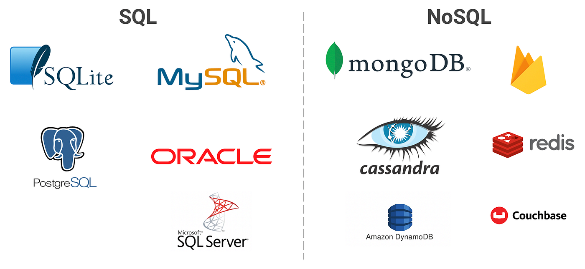

BAB I
PENDAHULUAN PEMROGRAMAN WEB
1.1 Sejarah dan Perkembangan Pemrograman Web
Sejarah World Wide Web (WWW) bermula pada tahun 1989 ketika Tim Berners-Lee, seorang ilmuwan di CERN (Organisasi Eropa untuk Riset Nuklir), mengajukan proposal sistem manajemen informasi terdistribusi. Tujuannya kala itu cukup sederhana, yaitu untuk memudahkan pertukaran dokumen dan hasil penelitian antar sesama ilmuwan di berbagai universitas di seluruh dunia. Pada tahun 1991, website pertama di dunia diluncurkan dengan tampilan yang sangat sederhana, hanya berisi teks dan hyperlink. Perkembangan teknologi web kemudian dikategorikan ke dalam beberapa fase evolusi utama:
1. Web 1.0 (The Static Web)
Era ini berlangsung dari awal 1990-an hingga awal 2000-an. Pada masa ini, website bersifat "read-only" atau satu arah. Pengguna hanya bisa membaca informasi yang disajikan oleh pembuat website tanpa bisa memberikan umpan balik, komentar, atau membuat konten sendiri. Halaman web bersifat statis dan dibangun murni menggunakan HTML dasar.

2. Web 2.0 (The Social Web)
Muncul sekitar tahun 2004, era ini menandai revolusi interaksi digital. Website berubah menjadi platform "read-write", di mana pengguna tidak hanya menjadi konsumen informasi tetapi juga produsen konten (User Generated Content). Contoh nyata dari era ini adalah kemunculan media sosial (Facebook, Twitter), blog, wiki, dan forum diskusi. Teknologi seperti AJAX (Asynchronous JavaScript and XML) mulai digunakan untuk membuat website lebih responsif tanpa perlu memuat ulang seluruh halaman.

3. Web 3.0 (The Semantic Web)
Saat ini kita sedang berada di masa transisi menuju Web 3.0. Fokus utamanya adalah pada pemrosesan data oleh mesin (machine readable) agar komputer dapat memahami konteks informasi selayaknya manusia. Era ini ditandai dengan kecerdasan buatan (AI), personalisasi konten yang ekstrem, desentralisasi data (blockchain), serta penggunaan Single Page Application (SPA) yang membuat pengalaman menggunakan web terasa secepat aplikasi desktop.

1.2 Perbedaan Pemrograman Desktop, Mobile, dan Web
Dalam rekayasa perangkat lunak, pemilihan platform sangat menentukan teknologi dan pendekatan yang digunakan. Berikut adalah analisis perbedaan mendalam antara ketiga platform utama:
1. Aplikasi Desktop
- Karakteristik: Aplikasi berjalan secara lokal di atas sistem operasi tertentu (Windows, macOS, atau Linux).
- Instalasi & Distribusi: Pengguna wajib mengunduh installer (.exe, .dmg) dan menginstalnya. Pembaruan (update) versi sering kali merepotkan karena pengguna harus mengunduh ulang atau melakukan patching.
- Kelebihan: Memiliki performa sangat tinggi dan akses penuh ke perangkat keras (seperti RAM, GPU, dan File System).
- Bahasa Pemrograman: C++, C#, Java (Swing/JavaFX), Python.
2. Aplikasi Mobile
- Karakteristik: Dirancang khusus untuk perangkat genggam (smartphone/tablet) dengan interaksi layar sentuh.
- Instalasi & Distribusi: Didistribusikan melalui toko aplikasi resmi (App Store atau Play Store). Aplikasi mobile terbagi menjadi Native (dibuat spesifik untuk Android/iOS) dan Hybrid (menggunakan teknologi web yang dibungkus menjadi aplikasi).
- Kelebihan: Integrasi mendalam dengan fitur hardware spesifik seperti GPS, Kamera, Accelerometer, dan Push Notifications.
- Bahasa Pemrograman: Swift (iOS), Kotlin/Java (Android), Flutter/React Native.
3. Aplikasi Web
- Karakteristik: Aplikasi yang diakses melalui peramban (web browser) dan tidak terikat pada sistem operasi tertentu.
- Instalasi & Distribusi: Tidak memerlukan instalasi. Pengguna hanya perlu mengetahui alamat URL (Uniform Resource Locator). Pembaruan sistem terjadi di sisi server, sehingga pengguna akan selalu mendapatkan versi terbaru setiap kali memuat ulang halaman (refresh).
- Kelebihan: Jangkauan akses yang sangat luas (cross-platform) dan biaya distribusi yang rendah. Dengan teknologi Progressive Web Apps (PWA), web kini bahkan bisa berjalan semi-offline.
- Bahasa Pemrograman: HTML, CSS, JavaScript, PHP, Ruby, Go.
1.3 Arsitektur Aplikasi Web Modern
Aplikasi web modern bekerja berdasarkan arsitektur Client-Server yang melibatkan komunikasi data melalui protokol HTTP (Hypertext Transfer Protocol). Proses ini dapat diuraikan sebagai berikut:
1. Sisi Client (Frontend)
Merupakan antarmuka visual yang berhadapan langsung dengan pengguna. Client biasanya adalah web browser (Chrome, Firefox, Edge) yang bertugas menerjemahkan kode program menjadi tampilan grafis. Ketika pengguna mengetikkan alamat website, browser mengirimkan permintaan (Request) ke komputer server. Teknologi yang bekerja di sisi ini disebut Frontend, yang meliputi:
- HTML (Struktur)
- CSS (Desain)
- JavaScript (Interaksi)

2. Sisi Server (Backend)
Server adalah komputer pusat yang melayani permintaan Client. Server menerima request, memprosesnya, dan mengirimkan balasan (Response) kembali ke client. Bahasa yang digunakan meliputi PHP, Node.js, Python, Java, dan GoLang. Sisi ini menangani logika bisnis yang tidak terlihat oleh pengguna, seperti:
- Mengecek apakah password saat login benar atau salah.
- Menghitung total belanjaan di keranjang e-commerce.
- Menyimpan data pendaftaran mahasiswa ke Database.
3. Database (Basis Data)
Merupakan tempat penyimpanan data persisten. Aplikasi web membutuhkan database untuk menyimpan data pengguna, produk, artikel, dan informasi lainnya agar tidak hilang saat server dimatikan. Contoh sistem basis data populer adalah MySQL, PostgreSQL, dan MongoDB.
1.4 Peran HTML, CSS, dan JavaScript dalam Pengembangan Web
Dalam pengembangan frontend modern, terdapat tiga pilar teknologi utama yang memiliki peran spesifik namun saling melengkapi. Analogi yang sering digunakan untuk menggambarkan ketiganya adalah "Tubuh Manusia":

1. HTML (HyperText Markup Language)
HTML berperan sebagai
kerangka tulang (skeleton) dari sebuah halaman
web. HTML mendefinisikan struktur dan makna semantik dari konten,
menentukan mana yang merupakan judul (heading), paragraf, gambar,
tautan, atau tabel. Tanpa HTML, tidak akan ada konten yang bisa
ditampilkan. HTML5 adalah standar terbaru yang membawa fitur
elemen semantik (seperti <header>,
<footer>, <section>) yang
memudahkan mesin pencari (SEO) memahami isi website.
2. CSS (Cascading Style Sheets)
Jika HTML adalah tulangnya, maka CSS adalah kulit, pakaian, dan riasannya. CSS bertanggung jawab atas aspek visual dan tata letak (layout). CSS mengatur warna, jenis huruf (typography), jarak antar elemen (margin/padding), dan bagaimana elemen tersebut diposisikan di layar. CSS3 juga memungkinkan pembuatan animasi dan desain responsif (Responsive Web Design), yang memastikan tampilan web tetap rapi saat dibuka di layar ponsel yang kecil maupun monitor desktop yang besar.
3. JavaScript
JavaScript adalah sistem saraf dan otot yang membuat website menjadi hidup. Bahasa ini menangani logika pemrograman di sisi client. Dengan JavaScript, halaman web bisa merespons tindakan pengguna secara real-time tanpa harus memuat ulang halaman. Contoh perannya meliputi validasi formulir (memastikan email yang dimasukkan benar), membuat menu dropdown, menampilkan peta interaktif, hingga mengambil data dari server di latar belakang (AJAX/Fetch API).